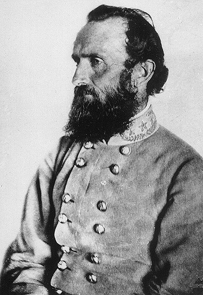
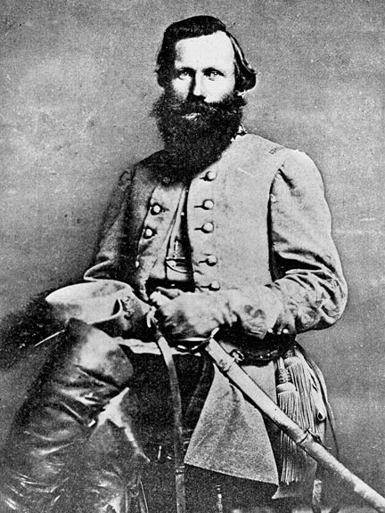
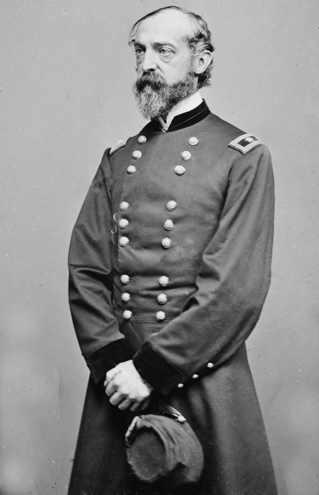

|
The road to Gettysburg
began at the tiny Virginia crossroads of Chancellorsville.
There, shortly after noon on May 3, 1863, as the sulfurous
smoke of battle clung to the ground, General Robert E. Lee
rode forth to savor his army's triumph. The stalwart
general and his mounted entourage guided their horses around
the mangled dead and writhing wounded, past demolished
cannon and exploded limber chests that flanked the burning
Chancellor house. At the sight of their beloved commander,
thousands of powder-stained soldiers in uniforms of
butternut and gray erupted in wild shouts of enthusiasm.
Lee's aide, Major Charles Marshall, noted, "One long,
unbroken cheer, in which the feeble cry of those who lay
helpless on the earth blended with the strong voices of
those who still fought, hailed the presence of the
victorious chief."
In three days of bloody combat amid the scrub oak and
pine forest called the Wilderness, Lee's Confederate Army of
Northern Virginia--just under 61,000 strong--had
out-maneuvered and outfought a Federal force of nearly
134,000 men. Major General Joseph Hooker, the vainglorious
Union commander, became the fourth leader of the Army of the
Potomac to fall victim to Lee's tactical expertise. Many of
Hooker's disgruntled soldiers, slogging back to their camps
across the Rappahannock River, placed the blame for their
defeat on Fighting Joe's well-known fondness for the bottle.
"The failure at Chancellorsville was due to the incompetency
which comes from a besotted brain," grumbled Private Robert
G. Carter of the 22d Massachusetts Infantry. "The Army of
the Potomac had marched, fought and endured, and was there
at Chancellorsville, as it always had been, superior to the
genius of any commander yet appointed."
Although the Army of the Potomac had been soundly beaten,
the massive Union force was far from crippled. Moreover,
while Hooker had lost 13 percent of his force at
Chancellorsville, Lee's smaller army had sustained a 22
percent casualty rate. Among the casualties was a
particularly devastating loss, the brilliant General Thomas
|

The loss of Lt. Gen. Stonewall Jackson less than a month
before the Battle of Gettysburg proved difficult for Gen. Robert E. Lee to overcome.
|
J. "Stonewall" Jackson, Lee's most trusted subordinate, who
succumbed to his wounds on May 10. In the wake of this
problematic victory, the question loomed for Lee: What now
to do? The Confederate commander realized that his victory
had achieved little more than a postponement of the day when
the Army of the Potomac would again press his outnumbered
army back toward Richmond. In considering his prospects,
Lee concluded that he had only two alternatives. The first
was to retire to Richmond and defend the city, a course of
action that he suspected Would end in a Confederate
surrender. The other choice was audacious and full of
risk--the kind of option that seemed to suit Lee's style of
command. It was an invasion of the North, a march across
the Potomac River and a strike into Pennsylvania.
In a series of meetings with
Confederate president Jefferson Davis and his cabinet, Lee
built a persuasive case for taking the offensive. Moving
north would solve one of Lee's critical problems--a chronic
supply shortage. Hampered by an inadequate rail-road
system, and operating in a war-ravaged region partly
occupied by the enemy, Lee was unable to provide sufficient
food and clothing for his army or forage for his horses. An
invasion of Pennsylvania would afford his soldiers access to
rich farmlands and give the people of Virginia time to
stockpile supplies.
But Davis and his advisers had other ideas about what to
do with the Army of Northern Virginia. For one thing, they
were preoccupied with the deteriorating situation in the
western theater, where General Ulysses S. Grant's Federals
were laying siege to the Mississippi River bastion of
Vicksburg. Some wanted Lee to send forces west to relieve
Vicksburg. They also feared that if Lee moved north, Hooker
might take advantage of the opportunity to strike south,
toward the Confederate capital at Richmond. All were
agreed, however, that something had to be done to shift the
fighting away from war-torn Northern Virginia.
And the Confederate leaders knew well that a successful
invasion might win prizes of incalculable value. The
Northern Peace Democrats surely would be encouraged to
demand an end to the conflict tinder terms reasonably
favorable to the South; a victory might also persuade
Britain and France to intervene on behalf of the
Confederacy.
In the weeks following
Chancellorsville, to adjust for the loss of Stonewall
Jackson, Lee reorganized the Army of Northern Virginia into
three corps commanded by his most able generals: James
Longstreet, Richard Stoddert Ewell, and Ambrose Powell Hill.
The force was resupplied as best it could be, reinforced to
more than 75,000 strong, and readied for the great invasion.
Despite their losses at Chancellorsville, Lee's soldiers
were supremely confident of their fighting prowess and the
military judgment of their commander. Lee had led the
Southern army in a string of victories since taking over
command: the Seven Days Battles around Richmond, and a
second triumph on the banks of Bull Run. His first invasion
of the North was turned back at Antietam, but he had
withstood the Federals at Fredericksburg and then defeated
them at Chancellorsville. His men were with him heart and
soul. "The troops of Lee were now at the zenith of their
perfection and glory," South Carolina lieutenant D. Augustus
Dickert recalled. "They looked upon themselves as
invincible, and that no General the North could put in the
field could match our Lee." Colonel Edward Porter Alexander
professed "nothing gave me much concern so long as I knew
that General Lee was in command. We looked forward to
victory under him as confidently as to successive sunrises."
For his part, Lee considered his devoted soldiers "the
finest body of men that ever tramped the earth."
A month after Chancellorsville, with Hooker apparently
still reluctant to resume the offensive, Lee prepared to
move his army by stages 30 miles northwest to the vicinity
of Culpeper. "I propose to do so cautiously," Lee wired
Davis on June 2, "watching the result, and not to get beyond
recall until I find it safe." By June 7 both Longstreet's
and Ewell's corps had encamped near Culpeper, and A. P.
Hill's corps was preparing to follow. The next day Lee
attended a grand review put on by his swashbuckling cavalry
commander, Major General James Ewell Brown (Jeb) Stuart,
whose 9,500 troopers were stationed six miles northeast of
Culpeper near the hamlet of Brandy Station. "It was a
splendid sight," Lee wrote his wife, Mary; "Stuart was in
all his glory."
Alerted to increased Confederate activity, but uncertain
of what it portended, on June 5 General Hooker expressed his
suspicions to President Abraham Lincoln that Lee "must have
it either in mind to cross the Upper Potomac, or to throw
his army between mine and Washington." Unaware that
two-thirds of Lee's army had already concentrated at
Culpeper, Hooker believed the Rebel forces there consisted
largely of Stuart's cavalry perhaps poised for a raid
against Union supply lines. In an effort to preempt a
Confederate attack, Hooker ordered his chief of cavalry,
Brigadier General Alfred Pleasonton, "to disperse and
destroy the rebel force assembled in the vicinity of
Culpeper."
In the early morning darkness of June
9, 1863, Pleasonton's 8,000 troopers, with 3,000 infantrymen
in support, splashed across the fog-shrouded Rappahannock
River at Beverly's and Kelly's fords, and overran Stuart's
outlying pickets. Surprised by the sudden onslaught, Stuart
desperately shifted his forces to confront the advancing
Yankee columns. For the next 14 hours, charge and
countercharge thundered across the ridges near Brandy
Station in the largest cavalry engagement ever waged on
American soil. By day's end Stuart's horsemen held the
field, with Pleasonton in retreat across the Rappahannock.
|

J.E.B. Stuart was accustomed to coming out on top
in cavalry engagements. His failure to do so at Brandy Station may
have caused him to take greater chances during the Battle of Gettysburg,
where he performed poorly.
|
But the self-confident Rebel horsemen had been forced to
accept the fact that the once-ridiculed Union cavalry were
now their equals in fighting ability.
Following the inconclusive battle at Brandy Station, the
Army of Northern Virginia continued its epic trek northward.
In the vanguard, the 21,000 troops of Ewell's corps moved
down the valley of the Shenandoah toward that river's
confluence with the Potomac. From June 13 through June 15,
Ewell attacked Major General Robert H. Milroy's Union
troops at Winchester, capturing 3,000 prisoners and 23
cannon, and virtually annihilating the last Yankee obstacle
to the fords of the Potomac River. On the evening of the
15th, Major General Robert E. Rodes' division tramped across
a pontoon bridge and gained the north bank of the Potomac
just south of Williamsport, Maryland.
Having gained a foothold in Maryland, Lee was now fully
determined to press his invasion of the North. Longstreet's
and Hill's forces were ordered to march with all haste from
their positions at Culpeper and Fredericksburg. The Blue
Ridge Mountains shielded the Confederate columns from
Federal observation, while Stuart's horsemen effectively
fended off Yankee cavalry probes east of the mountains. In
a series of mounted clashes at Aidie, Middleburg, and
Upperville, Pleasonton's Union troopers fought courageously
but failed to penetrate Stuart's cavalry screen.
When word of a Confederate onslaught in the lower
Shenandoah Valley reached Army of the Potomac headquarters
at Falmouth--across the Rappahannock from
Fredericksburg--Hooker's worst fears were realized. As yet
uncertain whether Lee intended to invade the North, to
threaten Washington, or to strike at the principal Federal
supply line--the Orange and Alexandria Railroad--the Union
commander began shifting his seven army corps northward to
Manassas Junction and Centreville, 20 miles outside the
defenses of Washington.
The Rebels had stolen several days' march on the
Federals, and the Northern troops were pushed to the
breaking point in the attempt to catch up with their enemy.
Marching for 15 hours at a stretch, clad in woolen uniforms
and weighed down with muskets, ammunition, and knapsacks,
the Yankee foot soldiers found their endurance sorely
tested. "The air was almost suffocating," recalled Private
John Haley of the 17th Maine; "The soil of Virginia was
sucked into our throats, sniffed into our nostrils, and flew
into our eyes and ears until our most intimate friends would
not have recognized us." Nauseated and temporarily blind,
Haley was one of hundreds who collapsed by the wayside.
"All day long we tugged our weary knapsacks in the
broiling sun, and many fell out to fall no more," Private
Wilbur Fisk of Vermont wrote his wife during a brief halt
near Fairfax. "We expect more hard marching, but shall
either get toughened to it, or, as the boys say, die
toughening."
Plodding northward in the ranks of the Fifth Corps,
Robert Carter observed that even veteran troops abandoned
all discipline in their quest for water. When officers
attempted to maintain order at roadside springs--most little
more than "slimy mudholes"--mobs of thirsty soldiers shoved
them aside while "the scooping and filtering of mud and grit
went on." As the tramp continued, Carter discovered how
callous human nature could become when subjected to such an
ordeal. The amputated arm of a Federal cavalryman wounded
in the fighting near Upperville "became a football for eve
one, and had to run the gauntlet, from the head of the
brigade to the rear."
While the Federals were struggling to catch up, the bulk
of the Army of Northern Virginia was crossing the Potomac
into Maryland. On June 24 A. P. Hill's corps forded the
river at Shepherdstown, and over the next two days
Longstreet crossed his corps at Williamsport. The crossing
took on the air of a celebration. Gray-clad soldiers tossed
their hats aloft and cheered, while regimental bands played
"Maryland! My Maryland" and "The Bonnie Blue Flag." Though
nearly as tired as their Federal pursuers, the Rebels were
jubilant to be once again on Northern soil. Captain Charles
Minor Blackford of Longstreet's corps heard one Confederate
laughingly exclaim, "Well, boys, I've been seceding for two
years and now I've got back into the Union!" Another soldier
told a somber group of Maryland women, "Here we are, ladies,
as rough and ragged as ever but back again to bother you."
Aware that the prosperous farms of Maryland and
Pennsylvania offered an irresistible temptation to his
hungry soldiers, Lee issued orders to prevent the theft of
crops and livestock. All confiscated supplies, he
declared, would be paid for at "the market price." The
soldiers mostly ignored their commander's directive,
however. Pilfering was widespread, and many Confederate
officers turned a blind eye to their soldiers'
indiscretions. "Some of the boys have been 'capturing'
chickens," Corporal Edmund D. Patterson of Alabama wrote his
wife; "It is against positive orders, but I would not punish
one of them." Colonel Clement A. Evans of the 31st Georgia
expressed a desire for revenge that motivated many of his
comrades-in-arms: "The rascals are afraid we are going to
overrun Pennsylvania," he noted. "That would indeed be
glorious, if we could ravage that state making her desolate
like Virginia. It would be a just punishment."
Thus far Lee's daring gamble had
exceeded all expectations, and the path to Pennsylvania
appeared wide open. In an effort to keep his dazed
opponents off balance, the Confederate commander instructed
General Jeb Stuart to "pass around" Hooker's forces with
three of his four cavalry divisions, "doing them all the
damage you can." Eager to repeat the success of his two
previous circumventions of the Yankee army, Stuart struck
eastward and embarked on a characteristically daring raid.
But it would prove to be a costly foray. Without the aid of
Stuart's troopers, Lee would be unable to track the Federal
movements for a crucial week of the campaign.
As Hill's and Longstreet's forces made their way rapidly
north through Maryland, Ewell's vanguard corps was already
across the Mason-Dixon line. One of Ewell's divisions, led
by gruff, hard-fighting Major General Jubal A. Early, forged
ahead toward the Susquehanna River, easily overcoming the
hastily mustered contingents of local militia that stood in
his path. Lee had advised Ewell, "If Harrisburg comes
within your means, capture it," and by June 27, with the
rest of Lee's army massing near Chambersburg, Ewell had
occupied the towns of York and Carlisle and was poised to
cross the Susquehanna and converge on Pennsylvania's capital
from the south and east.
Lee was confident that not only Harrisburg but also the
strategic railroad line linking that city with Philadelphia
would soon be in Confederate hands. But on the evening of
June 28, Robert E. Lee's optimism abruptly gave way to alarm
when one of Longstreet's scouts brought word that Hooker's
army was on the march. Indeed, the Federals had crossed the
Potomac at Edward's Ferry and were massing near Frederick,
Maryland, less than 40 miles south of the Confederate
headquarters at Chambersburg. Lee immediately recognized
the danger--if the Yankees continued their rapid advance,
they might well interpose themselves between the widely
scattered Rebel columns. He immediately called off the
movement against Harrisburg and ordered his corps commanders
to concentrate their forces at the village of Cashtown, some
25 miles east of Chambersburg.
The scout who brought the word of
Yankee movements also passed along, almost incidentally,
|

Maj. Gen. George Gordon Meade performed well at the
Battle of Gettysburg, despite assuming command of the Army of the Potomac only
a few days prior to the engagement. His failure to pursue the Army of
Northern Virginia after the battle was a black mark on his record, however,
and so he never got the credit that he thought was his due.
|
another interesting piece of news. Joseph Hooker was no
longer directing Federal operations. In the predawn
darkness of June 28, grizzled, hot-tempered Major General
George Gordon Meade--commander of the Union Fifth Corps--was
abruptly summoned to a meeting at Hooker's headquarters.
When he emerged, Meade turned to his son, Lieutenant George
Meade, Jr., and said, "Well, George, I am in command of the
Army of the Potomac."
Recognizing that a clash was imminent, General Meade
continued the army's relentless march northward,
dispatching Brigadier General John Buford's cavalry division
to determine the exact position of the Rebel columns. "I am
moving at once against Lee," the new commander informed his
wife; "a battle will decide the fate of our country and our
cause. Pray earnestly, pray for the success of my country."
With Major General John F. Reynolds' First Corps in the
vanguard, and the Eleventh Corps close behind, the weary
troops of the Army of the Potomac trekked across the
Mason-Dixon line. Many units had been covering 35 or more
miles a day and marching well into the night. "We tramped
over the dusty road with blistered feet and heavy loads,"
recalled Robert Stewart of the 140th Pennsylvania; "the only
solid food available was mouthful of 'hardtack,' now and
then, which we munched as we marched along."
Robert Carter saw "hundreds falling exhausted by the
roadside," many of them the victims of heatstroke. "Every
face looked like a piece of leather, bestreaked with sweat,
and besprinkled with dust." Despite cheers and encouragement
from the local populace, 5th New Hampshire officer Charles
Livermore found that fatigue and knowledge of impending
battle instilled grim silence in the trudging column: "There
was little heard in the ranks but the tread of feet, the
clanking of arms and equipment, and an occasional oath or
grumble from some tired mortal."
As Meade's forces were entering Pennsylvania, the first
of Lee's troops--Major General Henry Heth's division of
Hill's corps--arrived at Cashtown, the designated staging
area. On June 30 Herb ordered one of his brigade
commanders, Brigadier General James Johnston Pettigrew, to
conduct a reconnaissance of the town of Gettysburg, which
lay eight miles to the southeast. There was known to be a
shoe factory in Gettysburg. Pettigrew was instructed to
search the town for any usable supplies, especially shoes,
but he was to pull back if Gettysburg was found to be
occupied by Yankee troops.
When Pettigrew's 2,700 North Carolinians neared
Gettysburg on the late afternoon of June 30, they spotted
blue-clad horsemen heading for the ridges northwest of the
town. Pettigrew dutifully withdrew toward Cashtown as
ordered, and that night he and Heth conferred with Third
Corps commander Hill, in charge at Cashtown pending Lee's
arrival. Hill was convinced that any Federals in Gettysburg
must be nothing more than local militia. Herb responded:
"If there is no objection, General, I will take my division
tomorrow an d get those shoes." Hill replied: "None in the
world."
Hill could not have been more wrong. The Yankees in
Gettysburg were in fact the 2,700 troopers of General John
Buford's cavalry division. With the trained eye of a
veteran campaigner, Buford immediately recognized the town's
strategic importance. Twelve roads converged at Gettysburg
like the spokes of a wheel, making the town a logical point
of concentration for both the Union and Confederate armies.
Buford sent word to General Reynolds to bring up his
infantry as quickly as possible, and dispersed his troopers
to defend the high ground to the north and west of
Gettysburg until the reinforcements arrived. The great
bloodletting would begin at dawn.
Source: Megan Quinn for the History 139A website
|